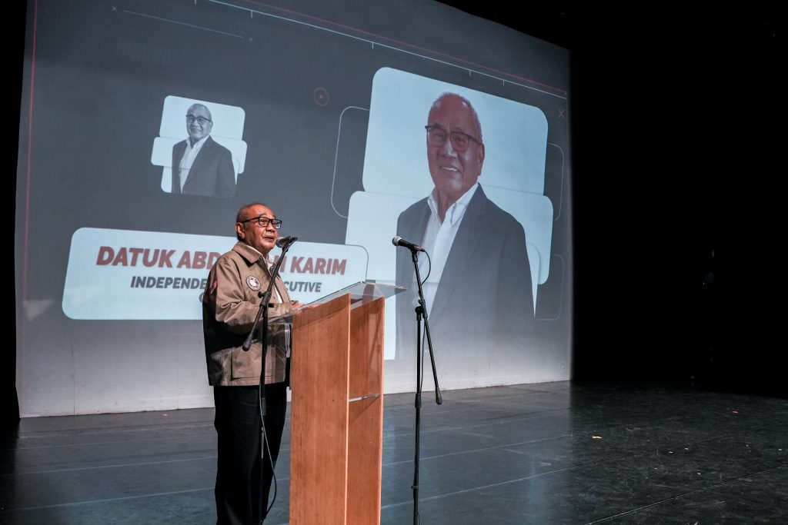
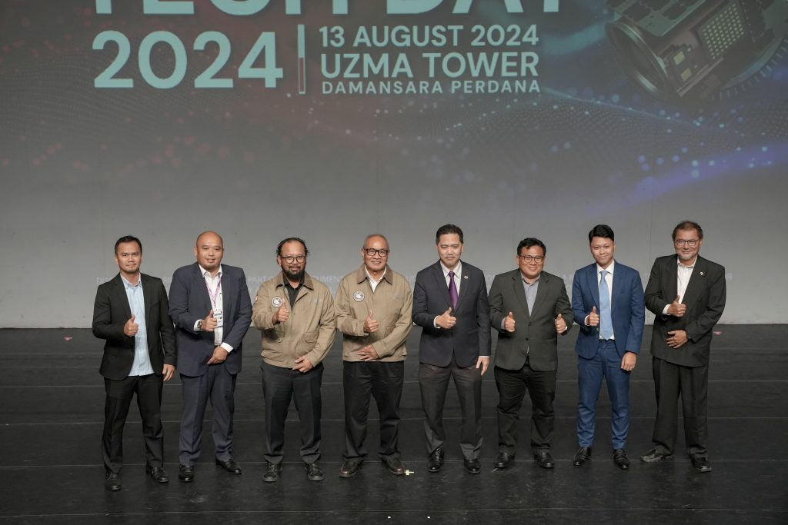

- Partners, Press Release
Uzma partners with key organisations to advance Malaysia’s geospatial industry
- September 5, 2024
- By Media GeoAI
UZMA Bhd has signed agreements with the Malaysia Space Agency (MYSA), SIRIM, MIMOS Bhd, Lebtech Energy Sdn Bhd, and Global Farm Biotech Sdn Bhd to boost Malaysia’s geospatial industry.
These partnerships precede the launch of UzmaSAT-1, an advanced Earth Observation (EO) satellite developed in collaboration with Satellogic.
The agreements include memorandums of understanding (MoUs) and letters of interest to enhance AI and remote sensing for soil health monitoring with MYSA’s Researcher Industry Scientific Exchange (RISE) programme.
Uzma will also work with MIMOS on satellite imaging for border security and precision agriculture, and support ESG measures through Carbon Accounting with SIRIM.
Collaborations with Lebtech Energy and Global Farm Biotech will focus on satellite-based solutions for urban data analysis and paddy cultivation.
UzmaSAT-1 aims to advance satellite imagery capabilities and geospatial services in Southeast Asia, leveraging high-temporal and high-resolution data from a large commercial EO constellation.


Uzma Chairman Datuk Abdullah Karim said the UzmaSAT-1 satellite initiative underscores its relentless pursuit of cutting-edge solutions, reflecting its ambition to extend its expertise beyond traditional boundaries.
“By venturing into the space sector, we not only solidify our position as a leader in the energy and geospatial industries but also embrace the future by expanding our capabilities into new and exciting realms.
“Uzma is dedicated to leveraging technology to create sustainable growth and to deliver impactful solutions that meet the evolving needs of our clients and the world,” he said.
Uzma CEO Dato’ Kamarul Redzuan Muhamed, meanwhile, said the transformative potential of satellite data in revolutionising industry operations by providing real-time, accurate insights and operational efficiencies. — TMR
Business News: The Malaysian Reserved, TMR | 14 August 2024
Related Posts
Looking for Answers to Your Industry Issues?
If you want us to share more about space technology, EUDR, EO satellite applications, and industry related, feel free to drop your contact and experience the technology yourself.